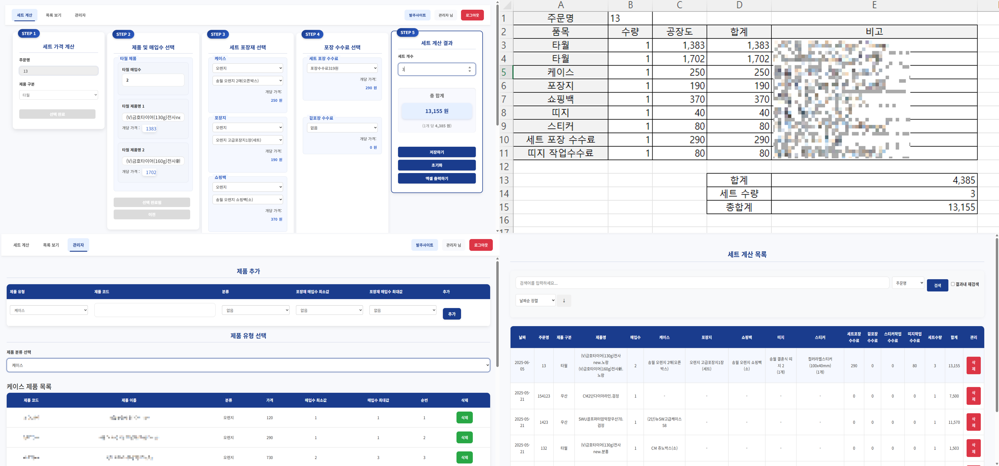

제품 세트 주문 및 가격 계산 관리 시스템
제품별 케이스, 포장지, 쇼핑백 등 구성품을 조합하여 세트 가격을 자동 계산하는 ASP 기반 웹 애플리케이션
프로젝트 개요
본 시스템은 제품 세트 주문 시 필요한 케이스, 포장지, 쇼핑백 등의 구성품을 조합하여 자동으로 가격을 계산하는 웹 기반 플랫폼입니다. 기존 수동 계산 방식에서 벗어나 정확하고 빠른 견적 산출을 통해 업무 효율성을 극대화하며, 제품 유형별(타월, 우산, 콤보) 맞춤형 계산 로직으로 복잡한 세트 구성도 간편하게 처리할 수 있습니다.
저장된 주문 내역을 통해 반복 주문 및 이력 관리가 가능하여 고객 서비스 품질 향상에 기여하며, Windows 서버 + IIS 기반으로 운용되어 안정적인 서비스를 제공합니다.
주요 기능
| 기능 영역 | 주요 기능 설명 |
|---|---|
| 세트 계산 기능 |
• 제품 구분별(타월/우산/콤보) 맞춤형 계산 • 케이스, 포장지, 쇼핑백 조합별 자동 가격 산출 • 실시간 계산 결과 표시 및 수량별 단가 적용 • 계산한 자료 Excel 파일 저장 |
| 주문 관리 기능 |
• 세트 주문 등록 / 조회 / 수정 / 삭제 • 주문 내역 저장 및 이력 관리 • 검색 및 정렬 기능으로 효율적인 데이터 관리 |
| 관리자 기능 |
• 제품 정보 및 가격 관리 • 분류별 제품 등록 및 수정 • 제품별 단가 및 수량별 할인 정책 설정 |
| 사용자 편의 기능 |
• 직관적인 단계별 입력 폼 • 실시간 유효성 검사 • 반응형 디자인으로 다양한 디바이스 지원 |
사용 기술
ASP (Classic)
MSSQL
JavaScript
jQuery
Bootstrap
HTML
CSS
- 백엔드 : Classic ASP (VBScript) 기반 서버 사이드 스크립트로 구현
- 웹서버 : Microsoft IIS를 웹서버로 사용하여 내부망에서 서비스 제공
- DB : MSSQL Server를 RDBMS로 사용하여 제품 정보 및 주문 데이터 저장
- 프론트엔드 : JavaScript, jQuery, HTML, CSS를 통해 프론트엔드 UI 구성
- UI 프레임워크 : Bootstrap 기반 반응형 디자인으로 일관된 UX 제공
- 공통 모듈 : includes 폴더에서 DB 연결과 로직을 통합 관리
개발 절차 및 방법론
- 요구사항 분석 : 제품 세트 구성 및 가격 계산 로직 분석을 통한 요구사항 도출
- 데이터베이스 설계 : 제품, 분류, 가격 정보를 효율적으로 관리하는 테이블 구조 설계
- 모듈별 개발 : 각 기능은 모듈별로 개발 후 AJAX를 활용한 동적 연동 구현
- 계산 로직 구현 : 제품 유형별 계산 로직 차별화로 정확한 가격 산출 보장
- 실무 기능 통합 : Excel 저장, 실시간 계산, 데이터 검증 등 실무 기능 통합 구현
주요 개발 내용
- 세트 계산기 메인 페이지 : 다단계 입력 폼(주문명 → 제품 구분 → 상세 옵션 → 계산 결과) 구현
- 실시간 계산 시스템 : 입력값 변경 시 즉시 가격 재계산 및 결과 표시
- 제품별 맞춤 계산 : 타월, 우산, 콤보 제품별 차별화된 계산 로직 구현
- 주문 관리 시스템 : 주문 내역 저장, 조회, 검색 및 페이지네이션 기능
- 관리자 페이지 : 제품 정보 및 가격 관리, 분류별 제품 등록/수정/삭제
- Excel 연동 : 계산 결과를 Excel 파일로 저장 및 업로드 기능
- 반응형 UI/UX : Bootstrap 기반 사용자 친화적 인터페이스 구현
내 역할
- 전체 ASP 페이지 설계 및 개발 (메인 계산기, 관리자 페이지, 주문 목록 등)
- 제품별 세트 계산 로직 및 실시간 가격 산출 알고리즘 구현
- MSSQL 데이터베이스 설계 및 CRUD 기능 구현
- jQuery와 AJAX를 활용한 동적 UI 및 사용자 경험 개선
- Bootstrap 기반 반응형 웹 디자인 및 CSS 커스터마이징
- Excel 파일 업로드/다운로드 기능 및 데이터 검증 로직 개발